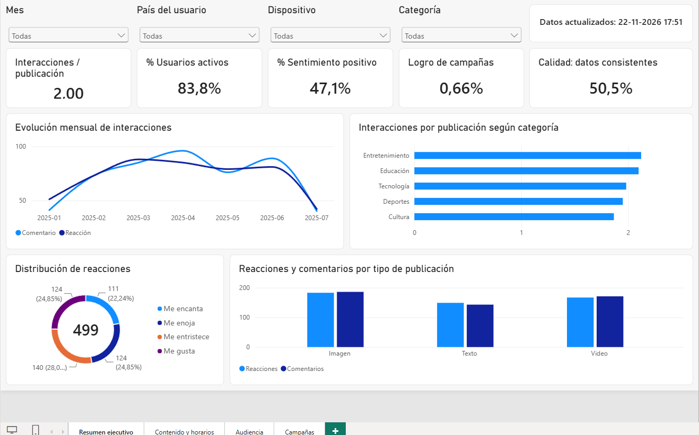
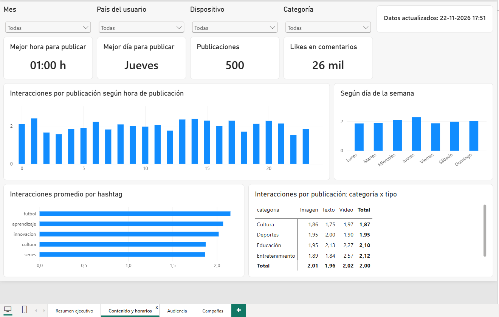
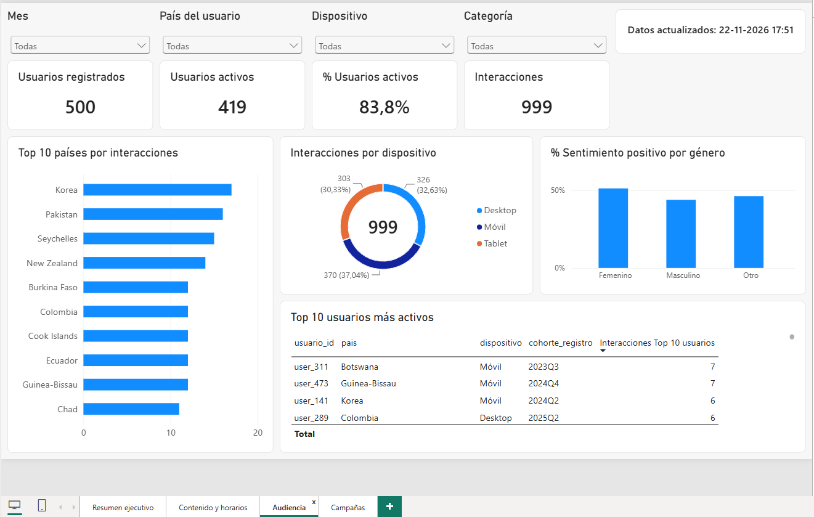
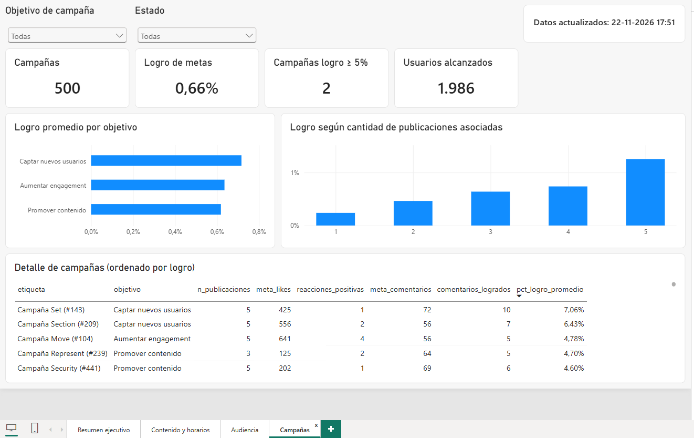

| Integrantes | Claudio Aro · Guillermo Cerda · Manuel Díaz |
| Docente | Germán Barrientos |
| Repositorio | https://github.com/apotheosisss/BDY0101-EP3-ContentFlow |
| Fecha | 22 de noviembre de 2026 |
| Fuente de datos | Azure Cosmos DB (API para MongoDB 4.2) |
| Herramienta BI | Microsoft Power BI Desktop (proyecto .pbip) |
ContentFlow es una plataforma digital donde los usuarios crean publicaciones, reaccionan, comentan y participan en campañas interactivas. Durante el último año la plataforma registró sus interacciones en una base de datos documental MongoDB con cinco colecciones: usuarios, publicaciones, reacciones, comentarios y campañas. En la Evaluación Parcial 1 se modeló esa base; en esta etapa los datos se explotan para apoyar decisiones.
La gerencia no tiene una vista consolidada de la actividad. La información está distribuida en documentos con estructuras anidadas (arreglos de hashtags y de publicaciones asociadas, objetos de métricas objetivo) y fechas almacenadas como texto, lo que impide responder directamente preguntas como ¿quiénes son los usuarios más activos?, ¿qué contenido y qué horarios generan más interacción? o ¿las campañas cumplen sus metas?
Extraer, transformar y visualizar los datos de la base MongoDB de ContentFlow para construir un tablero interactivo en Power BI que respalde decisiones sobre diseño de contenido, horarios de publicación, perfil de audiencia y éxito de las campañas.
Una plataforma de contenido vive de la participación. Medirla permite priorizar los formatos y temas que la comunidad valora, publicar en los momentos de mayor respuesta, reactivar a los usuarios inactivos y reasignar el presupuesto de campañas hacia las que realmente generan interacción.
El análisis responde a cuatro preguntas de negocio planteadas por la gerencia. Cada una se asocia a un área funcional, a una decisión concreta y a la página del tablero que la responde:
| Pregunta de negocio | Área funcional | Decisión que habilita | Dónde se responde |
|---|---|---|---|
| ¿Qué contenido es más popular? | Contenido / editorial | Priorizar categorías, formatos (imagen, video, texto) y hashtags con más interacciones por publicación. | Resumen · Contenido |
| ¿Cuándo conviene publicar? | Contenido / marketing | Definir el calendario editorial por hora y día de la semana. | Contenido y horarios |
| ¿Quién es la audiencia y quiénes son los usuarios más activos? | Comunidad / retención | Segmentar por país, dispositivo y género; identificar embajadores y usuarios inactivos para estrategias de retención. | Audiencia |
| ¿Tienen éxito las campañas? | Marketing / gerencia | Comparar el logro de metas por objetivo y por número de publicaciones asociadas; reasignar presupuesto. | Campañas |
El tablero reemplaza consultas ad hoc sobre la base por indicadores que se actualizan desde la fuente, de modo que las decisiones se apoyan en datos vigentes y no en percepciones.
El flujo tiene tres etapas: fuente (Cosmos DB), transformación (Python) y visualización (Power BI). Los CSV intermedios desacoplan la base de datos del tablero.
La base se aloja en una cuenta Azure Cosmos DB con API para MongoDB (versión de servidor 4.2, modo serverless, región West US). Se eligió Azure porque el equipo cuenta con suscripción Azure for Students y la pauta acepta Cosmos DB como alternativa a MongoDB Atlas. El modo serverless cobra solo por las operaciones realizadas, lo que para 2.500 documentos significa un costo de centavos. La región West US se escogió porque la política de la suscripción solo permite cinco regiones y las cercanas (Chile Central, Brazil South) estaban bloqueadas o sin capacidad.
La conexión se hace con Python 3.12 + PyMongo 4.10. La versión 4.10 es la última compatible con servidores MongoDB 4.2 (las posteriores exigen 4.4 o superior). La cadena de conexión, que incluye la clave de la cuenta, se lee desde un archivo .env excluido del repositorio:
load_dotenv(RAIZ / ".env")
cliente = MongoClient(os.environ["MONGO_URI"], serverSelectionTimeoutMS=20000)
db = cliente[os.environ.get("MONGO_DB", "contentflow")]
# URI: mongodb://<cuenta>:<clave>@<cuenta>.mongo.cosmos.azure.com:10255/?ssl=true&retrywrites=false...
La carga inicial (cargar_datos.py) inserta los JSON del anexo por lotes de 100 documentos con reintentos ante el error 16500 de Cosmos DB (límite de solicitudes) y crea índices en usuario_id y publicacion_id para acelerar los cruces.
Las consultas se ejecutan en el servidor: los cruces y agregaciones viajan como pipelines, y solo se transfieren los campos necesarios. Se consultan las cinco colecciones.
| # | Colección | Operación y propósito |
|---|---|---|
| Q1 | usuarios | find con proyección: excluye nombre y trae el correo solo para derivar su dominio (minimización de datos personales). |
| Q2 | publicaciones | Pipeline con dos $lookup (reacciones y comentarios) y $project con $size, $sum y $strLenCP: entrega cada publicación con su número de reacciones, comentarios, likes recibidos y largo del contenido. |
| Q3 | reacciones | find con proyección explícita de los cinco campos del caso. |
| Q4 | comentarios | $project que reemplaza el texto del comentario por su largo (no se necesita el texto para los KPIs). |
| Q5 | campanas | Dos pipelines: $unwind del arreglo publicaciones_asociadas (tabla puente) y $project que aplana el objeto anidado metricas_objetivo y cuenta publicaciones con $size. |
| Q6 | publicaciones | $unwind de hashtags + $group por categoría y hashtag: uso de cada hashtag por categoría. |
Ejemplo — publicaciones con sus métricas de interacción (Q2):
db.publicaciones.aggregate([
{"$lookup": {"from": "reacciones", "localField": "_id", "foreignField": "publicacion_id", "as": "r"}},
{"$lookup": {"from": "comentarios", "localField": "_id", "foreignField": "publicacion_id", "as": "c"}},
{"$project": {
"usuario_id": 1, "fecha_publicacion": 1, "categoria": 1, "tipo": 1, "hashtags": 1,
"largo_contenido": {"$strLenCP": "$contenido"},
"n_reacciones": {"$size": "$r"},
"n_comentarios": {"$size": "$c"},
"likes_comentarios": {"$sum": "$c.likes"}}}])
Ejemplo — desanidado de campañas y aplanado de métricas (Q5):
db.campanas.aggregate([
{"$unwind": "$publicaciones_asociadas"},
{"$project": {"_id": 0, "campana_id": "$_id", "publicacion_id": "$publicaciones_asociadas"}}])
db.campanas.aggregate([{"$project": {
"nombre": 1, "objetivo": 1, "fecha_inicio": 1, "fecha_fin": 1,
"meta_likes": "$metricas_objetivo.likes",
"meta_comentarios": "$metricas_objetivo.comentarios",
"meta_compartidos": "$metricas_objetivo.compartidos",
"n_publicaciones": {"$size": "$publicaciones_asociadas"}}}])
Verificación: la suma de n_reacciones y n_comentarios obtenida con $lookup coincide con el total de cada colección (500 y 500). El desanidado de campañas produce 1.487 pares campaña–publicación, todos con publicación existente.
Antes de transformar se perfilaron los datos para decidir qué limpieza aplicar:
campañas.json venía con la ñ mal codificada; la colección se cargó como campanas.compartidos existe en las campañas, pero ninguna colección registra acciones de compartir.Cada transformación queda registrada automáticamente por el ETL en data/processed/bitacora_transformaciones.csv con su tipo, justificación y número de registros afectados. Tipos: estructural (cambia la forma de los datos), semántica (agrega significado de negocio), formato (cambia el tipo) y limpieza (corrige o marca problemas de calidad).
| # | Tabla | Tipo | Transformación | Justificación | Reg. |
|---|---|---|---|---|---|
| 1 | dim_usuarios | semántica | correo -> dominio y tipo (Personal/Corporativo); se elimina el correo | Minimiza datos personales y permite segmentar audiencia | 500 |
| 2 | dim_usuarios | formato | 'fecha_registro' texto ISO-8601 -> datetime | Permite filtros por fecha, jerarquías y series de tiempo en Power BI | 500 |
| 3 | dim_usuarios | semántica | antigüedad en días y cohorte trimestral de registro | Analizar retención según antigüedad del usuario | 500 |
| 4 | dim_usuarios | limpieza | trim de pais/genero/dispositivo | Evita categorías duplicadas por espacios | 500 |
| 5 | dim_publicaciones | formato | 'fecha_publicacion' texto ISO-8601 -> datetime | Permite filtros por fecha, jerarquías y series de tiempo en Power BI | 500 |
| 6 | dim_publicaciones | semántica | hora, día de semana y franja horaria de publicación | Responde a la pregunta de negocio sobre horarios de publicación | 500 |
| 7 | puente_publicacion_hashtag | estructural | arreglo 'hashtags' desanidado a tabla puente (1 fila por hashtag), sin '#', minúsculas, sin tildes | Power BI no filtra sobre listas; la tabla puente permite relación muchos-a-muchos | 1018 |
| 8 | dim_publicaciones | semántica | engagement = reacciones + comentarios; ponderado = reacciones + 2*comentarios + 0,1*likes de comentarios | Un comentario exige más esfuerzo que una reacción; mide popularidad del contenido | 500 |
| 9 | fact_interacciones | formato | 'fecha' texto ISO-8601 -> datetime | Permite filtros por fecha, jerarquías y series de tiempo en Power BI | 500 |
| 10 | fact_interacciones | limpieza | reacciones duplicadas (mismo usuario y publicación): se conserva la más reciente | Una persona tiene una sola reacción vigente por publicación | 1 |
| 11 | fact_interacciones | semántica | tipo de reacción -> sentimiento (Me gusta/Me encanta = Positivo; Me enoja/Me entristece = Negativo) | KPI de percepción del contenido | 499 |
| 12 | fact_interacciones | formato | 'fecha' texto ISO-8601 -> datetime | Permite filtros por fecha, jerarquías y series de tiempo en Power BI | 500 |
| 13 | fact_interacciones | estructural | reacciones y comentarios unificados en una tabla de hechos (tipo_interaccion) | Un solo hecho permite medir actividad total por usuario, publicación y tiempo | 999 |
| 14 | fact_interacciones | limpieza | marca 'consistente_temporal' = interacción posterior a la publicación | Se detectaron interacciones fechadas antes de su publicación; se marcan (no se borran) para poder filtrarlas y reportar calidad de datos | 495 |
| 15 | fact_interacciones | limpieza | validación de integridad referencial usuario/publicación | Evita hechos sin dimensión en el modelo | 0 |
| 16 | dim_campanas | formato | 'fecha_inicio' texto ISO-8601 -> datetime | Permite filtros por fecha, jerarquías y series de tiempo en Power BI | 500 |
| 17 | dim_campanas | formato | 'fecha_fin' texto ISO-8601 -> datetime | Permite filtros por fecha, jerarquías y series de tiempo en Power BI | 500 |
| 18 | dim_campanas | semántica | etiqueta = nombre + id | 108 campañas comparten nombre; sin el id se mezclarían en los gráficos | 500 |
| 19 | puente_campana_publicacion | estructural | arreglo 'publicaciones_asociadas' desanidado ($unwind) a tabla puente | Relación muchos-a-muchos campaña-publicación | 1487 |
| 20 | dim_campanas | semántica | logro = interacciones reales en la ventana de la campaña / meta (likes ≈ reacciones positivas) | Mide el impacto de cada campaña frente a su objetivo. 'compartidos' no existe en los datos: queda como meta sin medición | 500 |
| 21 | dim_fecha | estructural | tabla calendario continua | Inteligencia de tiempo en Power BI (tendencias mensuales, comparaciones) | 730 |
consistente_temporal) y exponer su proporción como indicador de calidad en el tablero, de modo que el usuario puede filtrarlas y el área de TI tiene una medida del problema que debe corregir en la aplicación de origen.| Tabla | Filas | Contenido |
|---|---|---|
fact_interacciones | 999 | Hecho: una fila por reacción o comentario, con fecha, hora, sentimiento y marca de calidad. |
dim_usuarios | 500 | Usuarios sin datos personales: país, género, dispositivo, dominio de correo, cohorte y antigüedad. |
dim_publicaciones | 500 | Publicaciones con categoría, tipo, hora, día y métricas de interacción. |
dim_campanas | 500 | Campañas con metas aplanadas, resultados logrados en su ventana y % de logro. |
dim_fecha | 730 | Calendario continuo (mes, trimestre, día de semana). |
puente_publicacion_hashtag | 1.018 | Arreglo hashtags desanidado (publicación–hashtag). |
puente_campana_publicacion | 1.487 | Arreglo publicaciones_asociadas desanidado (campaña–publicación). |
control_ejecucion | 1 | Fecha y hora de la última ejecución del ETL. |
Se eligió Microsoft Power BI Desktop por las siguientes características técnicas y funcionales, contrastadas con los requerimientos del caso:
| Característica | Por qué responde a los requerimientos de ContentFlow |
|---|---|
| 1. Power Query (ETL integrado) | Importa los CSV con tipos y cultura explícitos, y usa un parámetro (RutaDatos) para que el mismo tablero funcione en cualquier equipo sin rehacer conexiones. |
| 2. Motor columnar VertiPaq y modelo relacional | Permite modelar en estrella las estructuras que en MongoDB estaban anidadas: tablas puente para relaciones muchos-a-muchos (hashtags, campañas) y relaciones inactivas activables con USERELATIONSHIP. |
| 3. Lenguaje DAX | Los KPIs se definen una vez como medidas y se recalculan según el contexto de filtro (país, mes, dispositivo, categoría), incluidos rankings sin empates y la detección de la mejor hora de publicación. |
| 4. Interactividad nativa | Segmentadores, filtrado cruzado entre visuales y detalle al pasar el cursor, sin programación: la gerencia explora los datos por su cuenta. |
| 5. Actualización y publicación | El botón Actualizar recarga los datos desde la fuente; publicado en Power BI Service admite actualización programada mediante puerta de enlace. |
| 6. Proyecto en texto (.pbip) | El modelo (TMDL) y el informe (PBIR) se guardan como archivos de texto versionables en Git, lo que deja evidencia del desarrollo en el repositorio. |
| 7. Costo y ecosistema | Desktop es gratuito y se integra con Azure, donde reside la base de datos. |
Alternativas consideradas: Tableau (licencia de pago para escritorio), Looker Studio (orientado a fuentes en la nube de Google; modelado relacional limitado) y Metabase (requiere servidor propio). Power BI cubre los requerimientos con menor costo y mejor integración con Azure.
Se evaluaron tres métodos para llevar los datos de Cosmos DB a Power BI:
| Método | Evaluación | Decisión |
|---|---|---|
| Conector directo de Power BI | El conector Azure Cosmos DB de Power BI está orientado a la API NoSQL; para la API de MongoDB requiere un controlador ODBC de terceros que aplana los documentos sin control sobre la transformación. | Descartado |
| Script de Python como origen en Power BI | Exige Python configurado dentro de Power BI en cada equipo y una puerta de enlace personal para actualizar en el servicio. | Descartado |
| Archivo intermedio CSV | El ETL en Python genera CSV que Power BI importa. Desacopla base y tablero, deja la transformación versionada y auditable, y permite trabajar sin conexión durante la presentación. | Elegido |
RutaDatos, promueve encabezados y asigna tipos con cultura en-US (punto decimal y fechas ISO), independiente del idioma del equipo.let
Origen = Csv.Document(File.Contents(RutaDatos & "fact_interacciones.csv"),
[Delimiter = ",", Encoding = 65001, QuoteStyle = QuoteStyle.Csv]),
Encabezados = Table.PromoteHeaders(Origen, [PromoteAllScalars = true]),
Tipos = Table.TransformColumnTypes(Encabezados, {{"fecha_hora", type datetime}, {"hora", Int64.Type}, ...}, "en-US")
in
Tipos
Los documentos se reorganizaron en un modelo estrella. La tabla de hechos fact_interacciones unifica reacciones y comentarios (cada fila es una interacción de un usuario sobre una publicación en un momento), rodeada de dimensiones descriptivas. Los arreglos anidados de MongoDB se convirtieron en tablas puente.
fact_interacciones con una columna tipo_interaccion. Así “interacciones” se mide de forma única y se puede separar por tipo cuando se necesita.hashtags y publicaciones_asociadas se desanidaron en tablas puente de dos columnas.dim_publicaciones también se relaciona con usuarios (autor) y con fechas (fecha de publicación). Si estuvieran activas existirían dos caminos de filtro desde el hecho hasta la misma dimensión; se dejan inactivas y se activan con USERELATIONSHIP en la medida que las necesita.dim_campanas.dim_fecha) para analizar tendencias por mes sin huecos.| Visual | Tipo | Por qué ese tipo y qué decisión apoya | Área |
|---|---|---|---|
| Página 1 · Resumen ejecutivo | |||
| Tarjetas KPI (×5) | Tarjeta | Un número grande se lee en un segundo; muestra el estado de los 4 KPIs y de la calidad de datos. | Gerencia |
| Evolución mensual de interacciones | Líneas | El eje es temporal y continuo; la línea muestra tendencia y estacionalidad, separando reacciones y comentarios. | Gerencia |
| Interacciones por publicación según categoría | Barras horizontales | Comparación entre categorías ordenadas de mayor a menor; las etiquetas largas se leen mejor en horizontal. | Contenido |
| Distribución de reacciones | Anillo | Pocas categorías (4) que suman un total: muestra la proporción de cada tipo de reacción. | Comunidad |
| Reacciones y comentarios por tipo | Columnas agrupadas | Compara dos medidas dentro de tres formatos de publicación. | Contenido |
| Página 2 · Contenido y horarios | |||
| Mejor hora / mejor día | Tarjeta (texto) | Responde directamente “¿cuándo publicar?” sin obligar a leer un gráfico. | Marketing |
| Interacciones según hora de publicación | Columnas | Las 24 horas son una secuencia ordenada; las columnas permiten ver picos y valles. | Marketing |
| Según día de la semana | Columnas | Siete categorías ordenadas de lunes a domingo. | Marketing |
| Interacciones promedio por hashtag | Barras horizontales | Ranking de hashtags; usa la tabla puente para filtrar por hashtag. | Contenido |
| Categoría × tipo | Matriz | Cruce de dos dimensiones con valores exactos y totales por fila y columna. | Contenido |
| Página 3 · Audiencia | |||
| Top 10 países | Barras horizontales | Hay 205 países; mostrar solo los 10 primeros evita un gráfico ilegible. | Comunidad |
| Interacciones por dispositivo | Anillo | Tres categorías que forman un todo: proporción de uso por dispositivo. | Producto |
| % sentimiento positivo por género | Columnas | Compara un porcentaje entre tres grupos. | Comunidad |
| Top 10 usuarios más activos | Tabla | Se necesita el detalle (id, país, dispositivo, cohorte) para contactar a los usuarios; una tabla es el formato adecuado. | Retención |
| Página 4 · Campañas | |||
| Logro promedio por objetivo | Barras horizontales | Compara el desempeño de los tres objetivos de campaña. | Marketing |
| Logro según cantidad de publicaciones | Columnas | Eje ordinal (1 a 5 publicaciones): muestra la relación entre esfuerzo y resultado. | Marketing |
| Detalle de campañas | Tabla | Muestra meta frente a logro de cada campaña, ordenada por cumplimiento. | Gerencia |
Todos los visuales se filtran entre sí: por ejemplo, al hacer clic en “Móvil” en el anillo de dispositivos, el resto de la página se recalcula solo para esos usuarios.




| KPI | Cálculo (DAX) | Origen de los datos | Interpretación y uso |
|---|---|---|---|
| 1. Interacciones por publicación | DIVIDE([Interacciones], [Publicaciones]) | reacciones + comentarios (hecho) / publicaciones | Popularidad media del contenido. Filtrado por categoría, tipo u hora indica qué contenido y qué horario rinden más. |
| 2. % usuarios activos | DIVIDE([Usuarios activos], [Usuarios registrados])activos = DISTINCTCOUNT(fact[usuario_id]) | usuarios + hecho de interacciones | Participación de la base registrada. El complemento (16,2 %, 81 usuarios) es el público objetivo de las campañas de reactivación. |
| 3. % sentimiento positivo | DIVIDE([Reacciones positivas], [Reacciones]) | reacciones (tipo → sentimiento en el ETL) | Percepción del contenido. “Me gusta” y “Me encanta” se consideran positivas; “Me enoja” y “Me entristece”, negativas. |
| 4. Logro de campañas | AVERAGE(dim_campanas[pct_logro_promedio]) | campañas + puente + hecho, dentro de la ventana de cada campaña | Promedio de (reacciones positivas / meta de likes) y (comentarios / meta de comentarios). Mide si las campañas cumplen lo que se propusieron. |
| Calidad de datos | DIVIDE(CALCULATE([Interacciones], fact[consistente_temporal] = TRUE()), [Interacciones]) | hecho de interacciones | Proporción de interacciones con fecha válida (50,5 %). Indicador de control para TI. |
El modelo contiene 26 medidas organizadas en carpetas (Base, KPI, Contenido, Audiencia, Campañas, Control). Las medidas de apoyo más relevantes:
Mejor hora para publicar
Hora de publicación con más interacciones por publicación
Mejor hora para publicar = VAR t = ADDCOLUMNS(VALUES(dim_publicaciones[pub_hora]), "@e", [KPI Interacciones por publicación]) VAR h = MAXX(TOPN(1, t, [@e], DESC), dim_publicaciones[pub_hora]) RETURN FORMAT(h, "00") & ":00 h"
Ranking usuario
Posición por interacciones; los empates se resuelven por orden alfabético
Ranking usuario =
IF(HASONEVALUE(dim_usuarios[usuario_id]),
VAR actual = [Interacciones]
VAR clave = SELECTEDVALUE(dim_usuarios[usuario_id])
VAR t = ADDCOLUMNS(ALLSELECTED(dim_usuarios[usuario_id]), "@i", [Interacciones])
RETURN COUNTROWS(FILTER(t, [@i] > actual || ([@i] = actual && dim_usuarios[usuario_id] < clave))) + 1
)Interacciones Top 10 usuarios
Interacciones Top 10 usuarios = IF(NOT ISBLANK([Ranking usuario]) && [Ranking usuario] <= 10, [Interacciones])
Interacciones por hashtag
Interacciones promedio de las publicaciones que usan el hashtag
Interacciones por hashtag = DIVIDE(SUMX(puente_publicacion_hashtag, RELATED(dim_publicaciones[engagement])), [Publicaciones con hashtag])
Publicaciones por autor
Usa la relación inactiva autor -> usuario
Publicaciones por autor = CALCULATE([Publicaciones], USERELATIONSHIP(dim_publicaciones[autor_id], dim_usuarios[usuario_id]))
Última actualización
Momento de la última ejecución del ETL
Última actualización = "Datos actualizados: " & FORMAT(MAX(control_ejecucion[ultima_ejecucion]), "dd-mm-yyyy hh:nn")
Automatización de los KPIs: ningún KPI se escribe a mano. Todos se recalculan a partir de la base en cada actualización (sección 10) y responden a los filtros que aplique el usuario.
El flujo completo, desde Cosmos DB hasta el tablero, se ejecuta sin pasos manuales de transformación:
| Componente | Función |
|---|---|
actualizar.ps1 | Ejecuta el ETL completo (extracción, transformación y carga) y registra el resultado con fecha y hora en logs/etl_AAAA-MM-DD.log. Si algo falla, termina con código de error. |
| Botón Actualizar de Power BI | Recarga las 9 tablas desde los CSV y recalcula las 26 medidas. |
| Tarjeta “Datos actualizados” | Muestra en cada página la fecha y hora de la última ejecución del ETL (tabla control_ejecucion). |
registrar_tarea.ps1 (opcional) | Programa actualizar.ps1 en el Programador de tareas de Windows con la frecuencia deseada (por defecto, cada hora). |
preparar_equipo.ps1 | Deja operativo cualquier computador en un paso: entorno Python, prueba de conexión, ETL y ajuste del parámetro RutaDatos. |
demo_en_vivo.py | Inserta en Cosmos DB 60 reacciones y 20 comentarios marcados como demostración y luego los revierte, para mostrar en vivo que los KPIs cambian al actualizar. |
Prueba realizada: tras insertar los datos de demostración y actualizar, las interacciones subieron de 999 a 1.079 y “Me encanta” de 111 a 171. Al revertir, la base volvió a 500 documentos por colección.
| Hallazgo (datos del tablero) | Recomendación |
|---|---|
| Horario: la tarde (12–17 h) logra 2,16 interacciones por publicación frente a 1,89 de la noche. El jueves (2,29) supera al lunes (1,86) en un 23 %. | Concentrar las publicaciones clave entre las 13 y las 15 h y de miércoles a jueves; evitar las 22 h y la madrugada (2–3 h), que tienen los peores resultados. |
| Contenido: Entretenimiento (2,12) y Educación (2,10) lideran; Cultura es la más baja (1,87). El video de Entretenimiento alcanza 2,57. El hashtag #futbol es el de mejor rendimiento (2,15). | Priorizar video en Entretenimiento y contenido educativo; revisar el enfoque de Cultura; usar #futbol y #aprendizaje en las campañas. |
| Audiencia: el móvil concentra el 37 % de las interacciones. 81 usuarios (16,2 %) nunca interactuaron. | Diseño mobile-first y una campaña de reactivación dirigida a los 81 usuarios inactivos. |
| Percepción: solo el 47,1 % de las reacciones son positivas; “Me entristece” es la más frecuente (28 %). El público femenino reacciona más positivamente (51,2 %) que el masculino (43,9 %). | Analizar las publicaciones con más reacciones negativas y ajustar la línea editorial; segmentar mensajes por audiencia. |
| Campañas: el logro promedio es 0,66 % y solo 2 de 500 campañas superan el 5 %. Las campañas con 5 publicaciones logran 1,25 %, cinco veces más que las de 1 publicación (0,24 %). 38 campañas no tuvieron ninguna interacción en su ventana. | Reformular las metas según el volumen real de interacción (son de cientos de likes por campaña, con apenas 1.000 interacciones en toda la plataforma); asociar más publicaciones a cada campaña; pausar las campañas sin respuesta. |
| Calidad de datos: el 49,5 % de las interacciones tiene fecha anterior a su publicación, y no existe registro de “compartidos”. | Corregir la captura de fechas en la aplicación de origen y comenzar a registrar compartidos, para poder medir esa meta. |
El tablero actual (figuras 3 a 6) es la base del dashboard final. Para la entrega final se proyecta:
dim_usuarios).| KPI proyectado | Definición | Requisito |
|---|---|---|
| Tasa de retención mensual | Usuarios activos en el mes n que también lo están en n+1, sobre los activos en n. | Disponible con los datos actuales. |
| Crecimiento mensual de interacciones | Variación porcentual de las interacciones respecto del mes anterior. | Disponible (medida con inteligencia de tiempo). |
| Tiempo a la primera interacción | Horas entre la publicación y su primera interacción. | Requiere corregir las fechas inconsistentes en el origen. |
| Tasa de compartidos por campaña | Compartidos logrados / meta de compartidos. | Requiere registrar las acciones de compartir. |
| Interacciones por usuario alcanzado | Interacciones de la campaña / usuarios distintos alcanzados. | Disponible. |
contentflow/ ├── data/raw/ JSON del anexo (Forma A) ├── data/processed/ CSV del modelo + bitácora (generados por el ETL) ├── scripts/ │ ├── cargar_datos.py carga inicial a Cosmos DB │ ├── etl_contentflow.py extracción + transformación + carga │ ├── generar_pbip.py genera el modelo (TMDL) y el informe (PBIR) │ ├── actualizar.ps1 actualización con registro en logs/ │ ├── registrar_tarea.ps1 programación opcional en Windows │ ├── preparar_equipo.ps1 configuración de un equipo nuevo │ └── demo_en_vivo.py demostración de actualización ├── powerbi/ContentFlow.pbip proyecto Power BI ├── docs/capturas/ evidencias del tablero ├── docs/informe/ este informe ├── requirements.txt · .env.example · .gitignore
# 1. Copiar .env (cadena de conexión) en la raíz del proyecto # 2. Preparar el equipo (entorno, conexión, ETL y ruta de datos) powershell -ExecutionPolicy Bypass -File scripts\preparar_equipo.ps1 # 3. Abrir powerbi\ContentFlow.pbip y pulsar Actualizar # Actualizaciones posteriores: powershell -File scripts\actualizar.ps1
.env, excluido del repositorio por .gitignore; el repositorio incluye un .env.example sin credenciales.